Planeta Terra
Som chega com a trilha
Vibração
Pistas
Conta opcional
Polinizando 0%
Planeta Terra
Primeira região revelada
Planeta Terra
Vulcânicoao alcance
?fora do alcance
?sinais de criaturas
Melhorias na nave aumentam o alcance e revelam novas regiões.